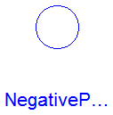

This package contains connectors and interfaces (partial models) for electrical multiphase components, based on Modelica.Electrical.Analog.
Extends from Modelica.Icons.InterfacesPackage (Icon for packages containing interfaces).
| Name | Description |
|---|---|
| Plug with m pins for an electric component | |
| Positive plug with m pins | |
| NegativePlug | Negative plug with m pins |
| Partial model to include conditional HeatPorts in order to describe the power loss via a thermal network | |
| Component with one m-phase electric port | |
| Component with two electrical plugs and currents from plug_p to plug_n | |
| Component with two m-phase electric ports | |
| Component with two m-phase electric ports, including currents |
Connectors PositivePlug and NegativePlug are nearly identical.
The only difference is that the icons are different in order
to identify more easily the plugs of a component.
Usually, connector PositivePlug is used for the positive and
connector NegativePlug for the negative plug of an electrical component.
Connector Plug is a composite connector containing m Pins (Modelica.Electrical.Analog.Interfaces.Pin).
| Type | Name | Default | Description |
|---|---|---|---|
| Integer | m | 3 | Number of phases |
| Type | Name | Description |
|---|---|---|
| Integer | m | Number of phases |
| Pin | pin[m] |
connector Plug "Plug with m pins for an electric component" parameter Integer m(final min=1) = 3 "Number of phases"; Modelica.Electrical.Analog.Interfaces.Pin pin[m];end Plug;
Connectors PositivePlug and NegativePlug are nearly identical.
The only difference is that the icons are different in order
to identify more easily the plugs of a component.
Usually, connector PositivePlug is used for the positive and
connector NegativePlug for the negative plug of an electrical component.
Connector Plug is a composite connector containing m Pins (Modelica.Electrical.Analog.Interfaces.Pin).
Extends from Plug (Plug with m pins for an electric component).
| Type | Name | Default | Description |
|---|---|---|---|
| Integer | m | 3 | Number of phases |
| Type | Name | Description |
|---|---|---|
| Integer | m | Number of phases |
| Pin | pin[m] |
connector PositivePlug "Positive plug with m pins" extends Plug;end PositivePlug;

Connectors PositivePlug and NegativePlug are nearly identical.
The only difference is that the icons are different in order
to identify more easily the plugs of a component.
Usually, connector PositivePlug is used for the positive and
connector NegativePlug for the negative plug of an electrical component.
Connector Plug is a composite connector containing m Pins (Modelica.Electrical.Analog.Interfaces.Pin).
Extends from Plug (Plug with m pins for an electric component).
| Type | Name | Default | Description |
|---|---|---|---|
| Integer | m | 3 | Number of phases |
| Type | Name | Description |
|---|---|---|
| Integer | m | Number of phases |
| Pin | pin[m] |
connector NegativePlug "Negative plug with m pins" extends Plug;end NegativePlug;
 Modelica.Electrical.MultiPhase.Interfaces.ConditionalHeatPort
Modelica.Electrical.MultiPhase.Interfaces.ConditionalHeatPort
This partial model provides conditional heat ports for the connection to a thermal network.
| Type | Name | Default | Description |
|---|---|---|---|
| Integer | mh | 3 | Number of heatPorts=number of phases |
| Boolean | useHeatPort | false | =true, if all HeatPorts are enabled |
| Temperature | T[mh] | fill(293.15, mh) | Fixed device temperatures if useHeatPort = false [K] |
| Type | Name | Description |
|---|---|---|
| HeatPort_a | heatPort[mh] |
partial model ConditionalHeatPort
"Partial model to include conditional HeatPorts in order to describe the power loss via a thermal network"
parameter Integer mh(min=1)=3 "Number of heatPorts=number of phases";
parameter Boolean useHeatPort = false "=true, if all HeatPorts are enabled";
parameter Modelica.SIunits.Temperature T[mh]=fill(293.15, mh)
"Fixed device temperatures if useHeatPort = false";
Modelica.Thermal.HeatTransfer.Interfaces.HeatPort_a heatPort[mh] if useHeatPort;
end ConditionalHeatPort;
 Modelica.Electrical.MultiPhase.Interfaces.TwoPlug
Modelica.Electrical.MultiPhase.Interfaces.TwoPlug

Superclass of elements which have two electrical plugs: the positive plug connector plug_p, and the negative plug connector plug_n. The currents flowing into plug_p are provided explicitly as currents i[m].
| Type | Name | Default | Description |
|---|---|---|---|
| Integer | m | 3 | Number of phases |
| Type | Name | Description |
|---|---|---|
| PositivePlug | plug_p | |
| NegativePlug | plug_n |
partial model TwoPlug "Component with one m-phase electric port" parameter Integer m(min=1) = 3 "Number of phases"; Modelica.SIunits.Voltage v[m] "Voltage drops between the two plugs"; Modelica.SIunits.Current i[m] "Currents flowing into positive plugs";PositivePlug plug_p(final m=m); NegativePlug plug_n(final m=m); equation v = plug_p.pin.v - plug_n.pin.v; i = plug_p.pin.i;end TwoPlug;
Modelica.Electrical.MultiPhase.Interfaces.OnePort
Superclass of elements which have two electrical plugs: the positive plug connector plug_p, and the negative plug connector plug_n. The currents flowing into plug_p are provided explicitly as currents i[m]. It is assumed that the currents flowing into plug_p are identical to the currents flowing out of plug_n.
Extends from TwoPlug (Component with one m-phase electric port).
| Type | Name | Default | Description |
|---|---|---|---|
| Integer | m | 3 | Number of phases |
| Type | Name | Description |
|---|---|---|
| PositivePlug | plug_p | |
| NegativePlug | plug_n |
partial model OnePort "Component with two electrical plugs and currents from plug_p to plug_n" extends TwoPlug; equation plug_p.pin.i + plug_n.pin.i = zeros(m);end OnePort;
 Modelica.Electrical.MultiPhase.Interfaces.FourPlug
Modelica.Electrical.MultiPhase.Interfaces.FourPlug

Superclass of elements which have four electrical plugs.
| Type | Name | Default | Description |
|---|---|---|---|
| Integer | m | 3 | Number of phases |
| Type | Name | Description |
|---|---|---|
| PositivePlug | plug_p1 | |
| PositivePlug | plug_p2 | |
| NegativePlug | plug_n1 | |
| NegativePlug | plug_n2 |
partial model FourPlug "Component with two m-phase electric ports"
parameter Integer m(final min=1) = 3 "Number of phases";
Modelica.SIunits.Voltage v1[m] "Voltage drops over the left port";
Modelica.SIunits.Voltage v2[m] "Voltage drops over the right port";
Modelica.SIunits.Current i1[m]
"Current flowing into positive plug of the left port";
Modelica.SIunits.Current i2[m]
"Current flowing into positive plug of the right port";
PositivePlug plug_p1(final m=m);
PositivePlug plug_p2(final m=m);
NegativePlug plug_n1(final m=m);
NegativePlug plug_n2(final m=m);
equation
v1 = plug_p1.pin.v - plug_n1.pin.v;
v2 = plug_p2.pin.v - plug_n2.pin.v;
i1 = plug_p1.pin.i;
i2 = plug_p2.pin.i;
end FourPlug;
Modelica.Electrical.MultiPhase.Interfaces.TwoPort
Superclass of elements which have four electrical plugs. It is assumed that the currents flowing into plug_p1 are identical to the currents flowing out of plug_n1, and that the currents flowing into plug_p2 are identical to the currents flowing out of plug_n2.
Extends from FourPlug (Component with two m-phase electric ports).
| Type | Name | Default | Description |
|---|---|---|---|
| Integer | m | 3 | Number of phases |
| Type | Name | Description |
|---|---|---|
| PositivePlug | plug_p1 | |
| PositivePlug | plug_p2 | |
| NegativePlug | plug_n1 | |
| NegativePlug | plug_n2 |
partial model TwoPort "Component with two m-phase electric ports, including currents" extends FourPlug; equation plug_p1.pin.i + plug_n1.pin.i = zeros(m); plug_p2.pin.i + plug_n2.pin.i = zeros(m);end TwoPort;